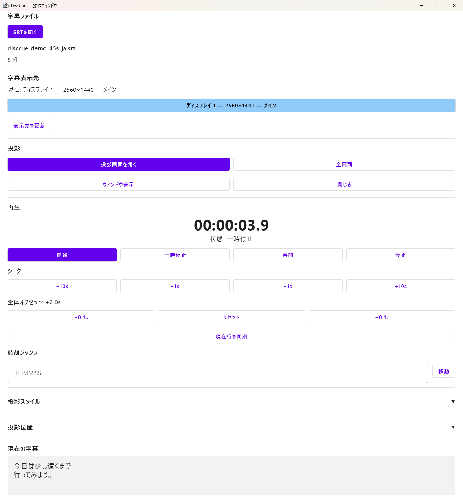
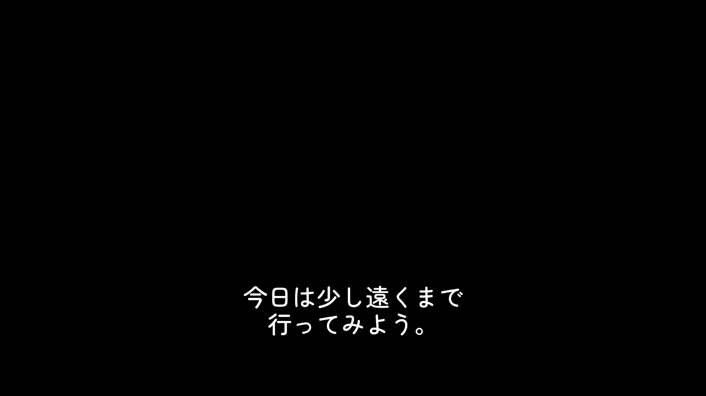
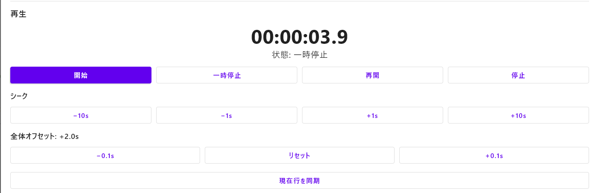

Your subtitles, kept local
Load an SRT file you are authorized to use. Normal subtitle processing stays on your PC; there is no subtitle upload or cloud search service.
WINDOWS HOME THEATER
External Subtitles for Physical Media
Keep your player.
Keep your disc.
Add your subtitles.
DiscCue displays your SRT subtitles on a separate screen or projector. Bring the subtitles into your viewing field while your existing equipment plays the movie.
Your movie signal stays untouched. Subtitle synchronization is manual.
30-minute cumulative FREE Trial · One-time Standard
v1.0.0 · Windows 11 x64
The FREE Trial is included in the same application.
One-time purchase · Up to 2 activated devices
Review the final price and applicable taxes in Polar Checkout.
Purchase, delivery and refund information
01 / THE PROBLEM
An imported Blu-ray or 4K UHD Blu-ray may not include the subtitle language you need. If you have an external SRT file you are authorized to use, DiscCue lets you add a separate subtitle output without replacing your player.
The movie stays on your TV or projector. Connect a second display or projector to your Windows PC, place the subtitle output in the same viewing field and adjust its timing from DiscCue.
Compare 4 ways to use external subtitles with Blu-ray / UHD →
DiscCue does not provide movies, TV programs, Blu-ray/UHD content or subtitle files. It does not rip discs, decrypt them, host or stream copyrighted content. Use legally obtained media and subtitle files you are authorized to use.
02 / HOW IT WORKS
Arrange the movie and subtitle outputs in the same viewing field.
DiscCue does not modify the movie signal, composite subtitles into it or control the player. Synchronization is manual.
03 / FEATURES
Load an SRT file you are authorized to use. Normal subtitle processing stays on your PC; there is no subtitle upload or cloud search service.
Choose a display or projector connected to your Windows PC. Adjust subtitle styling, position and geometry for your setup.
Use play, pause, offset and Seek / Jump to align the subtitles manually with the dialogue. Your existing player handles the movie.
Align the current displayed cue to the subtitle playback clock. This Standard feature adjusts the overall offset without rewriting your SRT. It does not detect movie audio or synchronize automatically.
Activate online once, then use Standard offline during normal subtitle playback. There is no periodic online revalidation. Deactivation needs an internet connection.
The same installer provides the FREE Trial and Standard. Purchase a key and activate it in the app when you are ready to move to Standard.
REAL PRODUCT
Japanese UI shown. DiscCue also supports an English interface. Select an image to view it at full size.

View full-size imageLoad an SRT, choose a display, and control playback, Seek and subtitle timing.

View full-size imageDisplay only your subtitles on a screen or projector separate from the movie.

View full-size imageA Standard feature for aligning timing using the subtitle currently displayed.
04 / WATCH DEMO
Watch the DiscCue interface, subtitle controls, timing adjustment and projection workflow. Demo content is not included with the software.
Watch Demo on YouTubeOpens YouTube. This page does not embed or automatically load the video.
05 / FREE TRIAL & STANDARD
FREE Trial
Check your Windows PC, SRT and subtitle display before buying.
30 cumulative minutes of active subtitle projection. Loading, setup and paused or stopped playback do not consume the trial. Remaining time is kept across app restarts.
Download DiscCueSame v1.0.0 application for Trial and Standard.
DiscCue Standard
Review the final price, currency and applicable taxes in Polar Checkout before purchasing.
Purchase, license delivery and refunds
DiscCue-1.0.0.msi · 56,369,688 bytes · Windows 11 x64
v1.0.0 Release Notes · Official downloads on GitHub
The current Windows installer is not digitally signed, so Windows may display a security warning during installation.
SHA-256
9EBF3A96757C867B317E28441BB1110E32536309375891FD13CAE19488DD6A38| Feature | FREE Trial | Standard |
|---|---|---|
| SRT and separate output | Included | Included |
| Style, position and manual timing | Included | Included |
| Active projection | 30 cumulative minutes | Unlimited |
| Current Line Sync | Not included | Included |
| Payment | Free download | One-time purchase |
| Standard activations | Not applicable | Up to 2 devices |
Polar Software, Inc. handles your purchase as merchant of record and reseller. After a completed purchase, Polar automatically issues a license key; use the order confirmation email to reach the Customer Portal. Activate the key inside the same DiscCue app. Initial activation and deactivation require internet access. Read purchase information, Terms and Privacy before buying. Trying the app does not restrict statutory rights or refund procedures.
06 / SYSTEM REQUIREMENTS
07 / FAQ
It displays your own SRT subtitles on a separate display or projector and lets you adjust their timing manually. Position the subtitle output in the same viewing field as the movie.
Yes, using a Windows PC and a separate subtitle display or projector. The Blu-ray player continues playing the disc as usual. DiscCue does not send subtitles into the player or add a digital overlay to its HDMI signal.
The movie continues through your existing UHD playback equipment. DiscCue handles only the separate subtitle output, so it does not process the movie resolution, HDR or audio. It is not a disc player or ripping tool.
No. You can keep playing the legally obtained disc on your existing equipment. DiscCue does not rip discs, decrypt them or stream copyrighted content.
No. Supply legally obtained media and SRT files you are authorized to use. Subtitle downloads, translation and cloud search are not included.
It provides 30 cumulative minutes of active subtitle projection. Loading, setup and paused or stopped playback do not consume it. Remaining time survives app restarts; projection playback pauses when the trial is exhausted. Current Line Sync is a Standard feature.
No. Standard is a one-time purchase for up to two activated devices. Review the final price, currency and applicable taxes in Polar Checkout before paying.
After your purchase is completed, Polar automatically issues the key. Follow the instructions in the order confirmation email to access the Customer Portal and view or copy it. Activate it inside the same DiscCue app; there is no separate Standard installer.
Yes. Connect the current PC to the internet and deactivate it to release an activation slot, then activate the new PC. Up to two devices may be activated.
Yes, after initial online activation. Normal subtitle use is offline, without periodic online revalidation. Initial activation and deactivation require an internet connection.
No. Use playback controls, offset and Seek / Jump to align subtitles manually. Current Line Sync corrects the offset using the current displayed cue; it does not listen to the movie or control your player.
Windows 11 x64. A Java runtime is included, so you do not need a separate JDK. Use the free trial to check your PC, display and SRT before purchasing.
Contact Polar support within 10 days of the transaction date with your order number and reason. Polar reviews requests at its discretion; this is not a money-back guarantee and does not limit non-waivable rights or other remedies. Read the purchase information page for details.
08 / SUPPORT
Questions about your setup, trial or license? Contact the DiscCue software provider.
mmd.apps303@gmail.comInclude your Windows and app versions, display equipment and a description of the issue. Do not send license keys, payment-card details, movies or subtitle files.
For order, billing or refund questions, contact Polar support.
Seller, software provider, delivery, licensing and refunds.